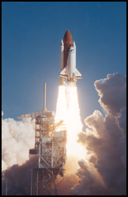

Home • Collection • Biography • Canadian Astronauts • Mission STS-42 • Microgravity Lab • Homecoming
IML: First International Microgravity Lab
The launch of Mission STS-42 in January 1992 was the first in a series of International Microgravity Laboratory missions. NASA had signed more than 100 agreements with nations for cooperative space activities. This international cooperation prevented the duplication of efforts and provided cost saving benefits. The experiments undertaken on these missions would explore how life forms adapt to weightlessness and investigate how materials behave when processed in space.
|  | ||
First International Microgravity Laboratory |
Dr. Bondar In Laboratory |
First International Microgravity Lab Insignias |
Dr. Roberta Bondar together with Dr. Ulf Merbold from Germany were the prime payload specialists. Over 40 life science and materials science microgravity experiments were undertaken during the flight. The experiments were designed by teams of more than 200 scientists from 14 countries and ranged from studies of plant and animal cell growth to studies of crewmember's work performance in space.
Seventeen experiments were carried out with the Biorack , a multipurpose facility designed to accommodate large numbers of animal and plant cells. The Biorack allows the crew to perform experiments using the specimens during the space flight. One experiment provided information on how gravity affects cartilage cell development of rodents. During this flight NASA's Vapor Crystal Growth System was able to produce the largest crystal of its kind ever produced in space.
The mission also carried a number of experiments developed by the Canadian Space Agency. This series of experiments investigated human adaptation to weightlessness. One of the experiments studied a back pain problem experienced by some astronauts during a space flight. The pain may be due to the lengthening of the spine by as much as 2-4cm in the weightlessness of space. Stereo photographs of the crewmember's backs before, during and after the flight will be studied.
The data collected from the experiments conducted during the mission will take scientists months and in some cases years to analyze.